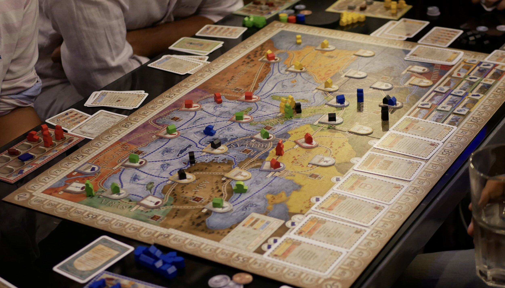

Мое хобби - настольные игры. Я обожаю собираться с друзьями или семьей за игровым столом и погружаться в увлекательный мир настольных игр. Настольные игры - это не только отличный способ провести время в кругу близких людей, но и возможность развивать логическое мышление, стратегическое мышление и командную работу. Я люблю играть в разные игры - от классических настолок, таких как "Монополия" или "Шахматы", до более современных и необычных игр. Игры помогают мне расслабиться и получить удовольствие от общения с людьми, которые разделяют мою страсть к настольным играм.